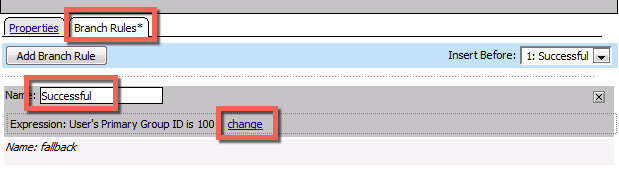
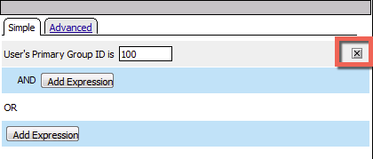
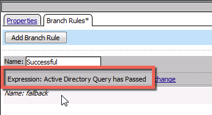
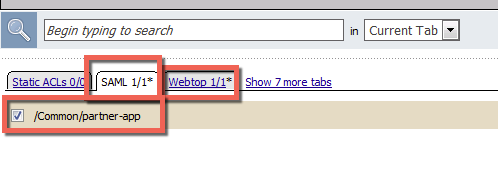
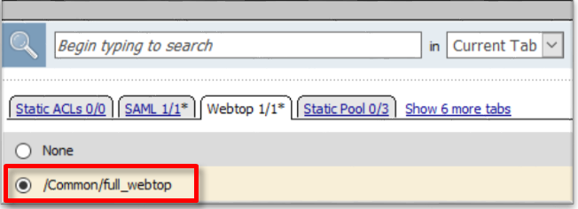

F5 Identity and Access Management Solutions > Class 1: SAML Federation with F5 Source | Edit on
Lab 2: SAML Identity Provider (IdP) Lab¶
The purpose of this lab is to configure and test a SAML Identity Provider. Students will configure the various aspect of a SAML Identity Provider, import and bind to a SAML Service Provider and test IdP-Initiated SAML Federation.
Objective:
- Gain an understanding of SAML Identity Provider(IdP) configurations and its component parts
- Gain an understanding of the access flow for IdP-Initiated SAML
Lab Requirements:
- All Lab requirements will be noted in the tasks that follow
Estimated completion time: 25 minutes
TASK 1 ‑ Configure the SAML Identity Provider (IdP)¶
IdP Service¶
Begin by selecting: Access ‑> Federation ‑> SAML Identity Provider ‑> Local IdP Services
Click the Create button (far right)
In the Create New SAML IdP Service dialog box, click General Settngs in the left navigation pane and key in the following:
IdP Service Name: idp.f5demo.com‑appIdP Entity ID: https://idp.f5demo.com/appNote
The yellow box on “Host” will disappear when the Entity ID is entered
In the Create New SAML IdP Service dialog box, click Assertion Settings in the left navigation pane and key in the following:
Assertion Subject Type: Persistent Identifier(drop down)Assertion Subject Value: %{session.logon.last.username}(drop down)
In the Create New SAML IdP Service dialog box, click SAML Attributes in the left navigation pane and click the Add button as shown
In the Name field in the resulting pop-up window, enter the following:
emailaddressUnder Attribute Values, click the Add button
In the Values line, enter the following:
%{session.ad.last.attr.mail}Click the Update button
Click the OK button

In the Create New SAML IdP Service dialog box, click Security Settings in the left navigation pane and key in the following:
Signing Key: /Common/SAML.key(drop down)Signing Certificate: | /Common/SAML.crt(drop down)Note
The certificate and key were previously imported
Click OK to complete the creation of the IdP service
SP Connector¶
Click on External SP Connectors (under the SAML Identity Provider tab) in the horizontal navigation menu
Click specifically on the Down Arrow next to the Create button (far right)
Select From Metadata from the drop down menu

In the Create New SAML Service Provider dialogue box, click Browse and select the app.partner.com_metadata.xml file from the Desktop of your jump host
In the Service Provider Name field, enter the following:
app.partner.comClick OK on the dialog box
Note
The app.partner.com_metadata.xml file was created previously. Oftentimes SP providers will have a metadata file representing their SP service. This can be imported to save object creation time as has been done in this lab.
Click on Local IdP Services (under the SAML Identity Provider tab) in the horizontal navigation menu
Select the Checkbox next to the previously created
idp.f5demo.comand click the Bind/Unbind SP Connectors button at the bottom of the GUIIn the Edit SAML SP’s that use this IdP dialog, select the
/Common/app.partner.comSAML SP Connection Name created previouslyClick the OK button at the bottom of the dialog box
Under the Access ‑> Federation ‑> SAML Identity Provider ‑> Local IdP Services menu you should now see the following (as shown):
Name: idp.f5demo.com-appSAML SP Connectors: app.partner.com
TASK 2 ‑ Create SAML Resource, Webtop, and SAML IdP Access Policy¶
SAML Resource¶
Begin by selecting Access ‑> Federation ‑> SAML Resources
Click the Create button (far right)
In the New SAML Resource window, enter the following values:
Name: partner‑appSSO Configuration: idp.f5demo.com‑appCaption: Partner AppClick Finished at the bottom of the configuration window
Webtop¶
Select Access ‑> Webtops ‑> Webtop List
Click the Create button (far right)
In the resulting window, enter the following values:
Name: full_webtopType: Full(drop down)Click Finished at the bottom of the GUI

SAML IdP Access Policy¶
Select Access ‑> Profiles/Policies ‑> Access Profiles (Per-Session Policies)
Click the Create button (far right)

In the New Profile window, enter the following information:
Name: idp.f5demo.com‑policyProfile Type: All(drop down)Profile Scope: Profile(default)Scroll to the bottom of the New Profile window to the Language Settings section
Select English from the Factory Built‑in Languages menu on the right and click the Double Arrow (<<), then click the Finished button.
The Default Language should be automatically set
From the Access ‑> Profiles/Policies ‑> Access Profiles (Per-Session Policies) screen, click the Edit link on the previously created
idp.f5demo.com‑policyline
In the Visual Policy Editor window for
/Common/idp.f5demo.com‑policy, click the Plus (+) Sign between Start and DenyIn the pop-up dialog box, select the Logon tab and then select the Radio next to Logon Page, and click the Add Item button
Click Save in the resulting Logon Page dialog box
In the Visual Policy Editor window for
/Common/idp.f5demo.com‑policy, click the Plus (+) Sign between Logon Page and DenyIn the pop-up dialog box, select the Authentication tab and then select the Radio next to AD Auth, and click the Add Item button
In the resulting AD Auth pop-up window, select
/Common/f5demo_adfrom the Server drop down menuClick Save at the bottom of the window
In the Visual Policy Editor window for
/Common/idp.f5demo.com‑policy, click the Plus (+) Sign on the successful branch between AD Auth and Deny
In the pop-up dialog box, select the Authentication tab and then select the Radio next to AD Query, and click the Add Item button
In the resulting AD Query pop-up window, select
/Common/f5demo_adfrom the Server drop down menuIn the AD Query pop‑up window, select the Branch Rules tab
Change the Name of the branch to Successful.
Click the Change link next to the Expression

In the resulting pop-up window, delete the existing expression by clicking the X as shown

Create a new Simple expression by clicking the Add Expression button

In the resulting menu, select the following from the drop down menus:
Agent Sel: AD QueryCondition: AD Query PassedClick the Add Expression Button

Click the Finished button to complete the expression

Click the Save button to complete the AD Query
In the Visual Policy Editor window for
/Common/idp.f5demo.com‑policy, click the Plus (+) Sign on the successful branch between AD Query and Deny
In the pop-up dialog box, select the Assignment tab and then select the Radio next to Advanced Resource Assign, and click the Add Item button

In the resulting Advanced Resource Assign pop-up window, click the Add New Entry button
In the new Resource Assignment entry, click the Add/Delete link

In the resulting pop-up window, click the SAML tab, and select the Checkbox next to
/Common/partner-app
Click the Webtop tab, and select the Checkbox next to
/Common/full_webtop
Click the Update button at the bottom of the window to complete the Resource Assignment entry
Click the Save button at the bottom of the Advanced Resource Assign window
In the Visual Policy Editor, select the Deny ending on the fallback branch following Advanced Resource Assign
In the Select Ending dialog box, selet the Allow radio button and then click Save

In the Visual Policy Editor, click Apply Access Policy (top left), and close the Visual Policy Editor
TASK 3 - Create the IdP Virtual Server and Apply the IdP Access Policy¶
Begin by selecting Local Traffic ‑> Virtual Servers
Click the Create button (far right)

In the New Virtual Server window, enter the following information:
General Properties Name: idp.f5demo.comDestination Address/Mask: 10.1.10.110Service Port: 443Configuration HTTP Profile: http(drop down)SSL Profile (Client) idp.f5demo.com‑clientsslAccess Policy Access Profile: idp.f5demo.com‑policy
Scroll to the bottom of the configuration window and click Finished
TASK 4 - Test the SAML IdP¶
Using your browser from the jump host, navigate to the SAML IdP you just configured at
https://idp.f5demo.com(or click the provided bookmark)Log in to the IdP. Were you successfully authenticated? Did you see the webtop with the SP application?
Note
Use the credentials provided in the Authentication section at the beginning of this guide (user/Agility1)
Click on the Partner App icon. Were you successfully authenticated (via SAML) to the SP?
Review your Active Sessions (Access ‑> Overview ‑> Active Sessions)
Review your Access Report Logs (Access ‑> Overview ‑> Access Reports)